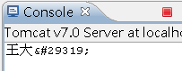
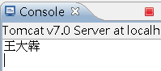
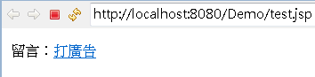
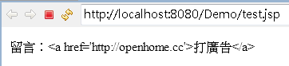
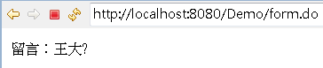
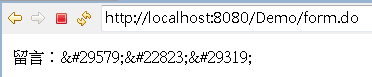
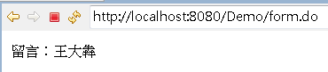

|
|
如果你有個Big5編碼撰寫的網頁，上頭的表單欄位，有人輸入了非Big5編碼容納的文字後送出，那會如何呢？<!DOCTYPE html PUBLIC "-//W3C//DTD HTML 4.01 Transitional//EN" 例如，若在上面這個範例網頁中輸入「王大犇」，發送至以下的Servlet： package cc.openhome; 那你會看到：  「犇」變亂碼了？不對，並不是亂碼。 在 HTML實體 中規範了實體名稱（Entity）與實體編號（Entity number），用以表達網頁上無法直接表現的字元，實體名稱的格式是&entity_name;，以<與>為例，因為<與>在HTML原始碼中，用來作為標籤之用，所以若要在網頁上呈現<與>，在HTML原始碼中必須撰寫為<與>，實體編號的格式為&#entity_number;，若要用實體編碼來表示<與>，則必須寫為<與>。 如果你知道一個字元的Unicode編碼，要得到它的實體編號，就只要將十六進位表示換為十進位表示就可以了，以犇為例，其Unicode編碼為U+7287，7287為十六進位表示，換為十進位表示就是29319。 有一些程式庫可以直接作轉換，例如Java中，可以使用 Commons Lang 中StringEscapeUtils的escapeHTML()與unescapeHTML()作轉換，以上面的Servlet為例，可以改為以下： package cc.openhome; 重新發送「王大犇」，結果就可以看到正確的中文了：  網頁表單通常不允許使用者輸入HTML，客戶端或伺服端通常會加以過濾，舉例來說，你有個留言版，客戶端若輸入HTML，最基本的，你可能會過濾掉<與>，這在Java中可以用Filter來達到目的，在 請求包裹器 中有個例子，將HTML的<與>換為實體名稱。 如果你事先沒有過濾HTML，而這些留言進到了資料庫，你不想一個一個修正，或者你想保留使用者原有的留言，那另一個方式，就是在傳送至使用者瀏覽器前， 將<與>等換為實體名稱或實體編號，最簡單的作法，就是使用JSTL核心標籤庫的<c:out>。例如： <%@ page contentType="text/html; charset=UTF-8" pageEncoding="UTF-8"%> 這個JSP會呈現以下的結果：  加上JSTL： <%@ page contentType="text/html; charset=UTF-8" pageEncoding="UTF-8"%> 則會呈現以下的結果：  觀看網頁原始碼，可以發現實體名稱的存在： <!DOCTYPE html PUBLIC "-//W3C//DTD HTML 4.01 Transitional//EN"
"http://www.w3.org/TR/html4/loose.dtd"> <html> <head> <meta http-equiv="Content-Type" content="text/html; charset=UTF-8"> </head> <body> 留言：<a href='http://openhome.cc'>打廣告</a> </body> </html> 這是因為JSTL的<c:out>，其escapeXML屬性預設為true，會替換特定的XML字元，不過它並不會替換像「犇」這類的字元，所以如果你的資料庫中撈出了「王大犇」，設定為請求範圍name屬性，並轉發至以下JSP網頁： <%@ page contentType="text/html; charset=Big5" pageEncoding="Big5"%> 這個網頁是Big5，無法直接顯示「犇」，所以會出現以下的畫面：  如果要解決這個問題，方法之一，就是設定請求範圍屬性前，先用StringEscapeUtils的escapeHTML()替換為實體編號： request.setAttribute("name", StringEscapeUtils.escapeHtml(name));
request.getRequestDispatcher("test.jsp").forward(request, response); 但這麼作之後，反而出現以下畫面：  這是當然地，由於已經替換為實體編號了，就不需要再使用<c:out>了，否則你的HTML會是： <!DOCTYPE html PUBLIC "-//W3C//DTD HTML 4.01 Transitional//EN"
"http://www.w3.org/TR/html4/loose.dtd"> <html> <head> <meta http-equiv="Content-Type" content="text/html; charset=Big5"> </head> <body> 留言：&#29579;&#22823;&犇 </body> </html> 將原本的JSP拿掉<c:out>就正常了： <%@ page contentType="text/html; charset=Big5" pageEncoding="Big5"%> 畫面如下：  因為HTML原始碼現在是： <!DOCTYPE html PUBLIC "-//W3C//DTD HTML 4.01 Transitional//EN"
"http://www.w3.org/TR/html4/loose.dtd"> <html> <head> <meta http-equiv="Content-Type" content="text/html; charset=Big5"> </head> <body> 留言：王大犇 </body> </html> 看到這邊，你會覺得，為何要這麼麻煩？現在不是鼓勵全部改用UTF-8嗎？為何要用Big5網頁自找麻煩？別忘了，有許多維護為主的公司，也許因為系統的歷史包袱，也許因為公司的組織分工，也許是其它的人事問題，舊系統不是你說改就改，即使是改個文字編碼也會困難重重。 有許多人常簡單地問，為什麼我的網頁出現亂碼？為什麼我的資料庫出現亂碼？為什麼我的XXX出現亂碼，老實說，很難回答這個問題，唯有了解系統中對於文字編碼的關鍵部份處理，才能解決問題，而這又有賴於你對編碼的了解，與所使用工作的熟悉度。 |